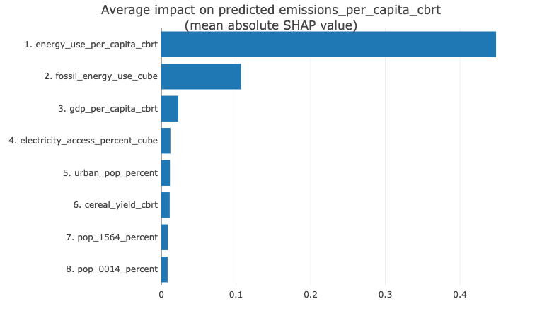

Using Machine Learning to Predict Emissions
Climate Change data from World Bank database is used to analyze the factors that can influence greenhouse gas emissions. A hypothesis is formulated to test if CO2 emissions depend on country-specific features available in the dataset and can be predicted from these. Two Machine Learning algorithms: Decision Tree Regressor and Random Forest Regressor models are built to predict CO2 emissions from growth indicators like Gross Domestic Product (GDP), population, and energy usage.
Features Importance 
Comparing the root mean square error (RMSE) between the two, Random Forest Regressor(RMSE=0.0281) fits the data better than Decision Tree Regressor (RSME = 0.199). An R-Squared of 99.3% is recorded by Random Forest Regressor.